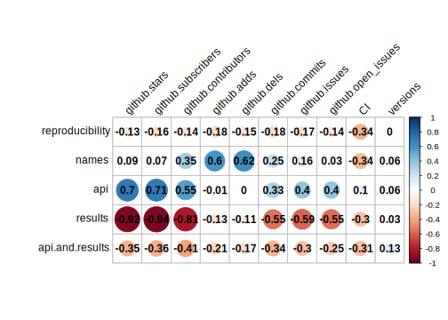
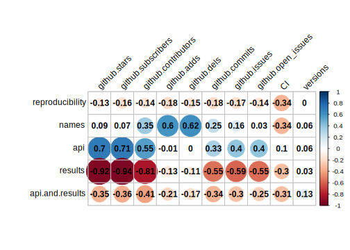
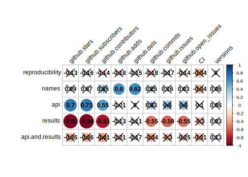

1.6 How active development affects reproducibility
Authors: Ngoc Anh Nguyen, Piotr Piątyszek, Marcin Łukaszyk (Warsaw University of Technology)
1.6.1 Abstract
Researchers creating packages can keep them updated or abandon them. Our motivation was to examine how these two approaches impact the reproducibility of the scientific paper. Using ten different auxiliary variables like GitHub commits or stars count we tested which correlates with the most widespread classes of reproducibility issues we have found. As a result, we propose two guidelines for people designing packages.
1.6.2 Introduction and Motivation
The key quality in measuring the outcome of researches and experiments is whether results in a paper can be attained by a different research team, using the same methods. Results presented in scientific articles may sometimes seem revolutionary, but there is very little use if it was just a single case impossible to reproduce. The closeness of agreement among repeated measurements of a variable made under the same operating conditions by different people, or over a period of time is what researches must bear in mind. Peng (2011) leading author of the commentary and an advocate for making research reproducible by others, insists reproducibility should be a minimal standard.
There have been several reproducibility definitions proposed during the last decades. Gentleman and Temple Lang (2007) suggest that by reproducible research, we mean research papers with accompanying software tools that allow the reader to directly reproduce the results and employ the computational methods that are presented in the research paper. The second definition is according to Vandewalle, Kovacevic, and Vetterli (2009), research work is called reproducible if all information relevant to the work, including, but not limited to, text, data, and code, is made available, such that an independent researcher can reproduce the results. As said by LeVeque (2009) the idea of ‘reproducible research’ in scientific computing is to archive and make publicly available all the codes used to create a paper’s figures or tables, preferably in such a manner that readers can download the codes and run them to reproduce the results. All definitions converge into one consistent postulate - the data and code should be made available for others to view and use. The availability of all information related to research paper gives other investigators the opportunity to verify previously published findings, conduct alternative analyses of the same data, eliminate uninformed criticisms and most importantly - expedite the exchange of information among scientists.
Reproducibility has great importance not only in the academic world but also it also plays a significant role in the business. The concept of technological dept is often used to describe the implied cost of additional rework caused by choosing an easy solution now instead of using a better approach that would take longer in software development.
There are papers about using version control systems to provide reproducible results (Stanisic, Legrand, and Danjean 2015). The authors presented how we can manage to maintain our goal of reproducibility using Git and Org-Mode. Other researchers have created a software package that is designed to create reproducible data analysis (Fomel et al. 2013). They have created a package that contains computational modules, data processing scripts, and research papers. The package is build using the Unix principle to write programs that are simple and do well one thing. The program breaks big data analysis chains into small steps to ensure that everything is going in the right way. Some papers suggest using Docker to make sure our research can be reproduced (Hung et al. 2016).
The main goal of our work is to measure the impact of the active development of packages on the reproducibility of scientific papers. Multiple authors (Rosenberg et al. 2020; Kitzes, Turek, and Deniz 2017) suggest using the version control system as a key feature in creating reproducible research. The second paper also provides evidence, that this is widely known. Git and GitHub were used in over 80% of cases. However, there are two kinds of using a version control system. An author can push software into the repository, to make it easily accessible and does not update it anymore. The second option is to keep the repository up-to-date and resolve users’ issues. We have not found any research on how these two approaches impact reproducibility.
1.6.3 Methodology
Articles
In our analysis, of reproducibility, we focused on articles introducing packages, that are actively developed on GitHub. Then we measure the reproducibility of an article using two versions of the package: current and the first after publication date to get the answer on the question, what if a package was never updated. In some cases, when it seems appropriate we used the last before publication. We selected 18 articles that were posted on R journal, that are on cran, are developed on GitHub, have code included to reproducibility, and doesn’t have too much impact on R environment.
Measures of reproducibility
We measured how many examples aren’t reproducible using these two versions. We categorized articles into 3 types of reproducibility:
1. The article is reproducible, minor differences can happen (e.g. different formating).
2. There are differences in function names, other packages that the article uses don’t work but at least half of it works.
3. Everything that doesn’t match 1 or 2. It means that the article is not reproducible.
We have counted the three most common issues in each article:
1. Names - function or variable name has to be changed
2. API - way of using a function or their arguments has changed
3. Result - output differs
Using these we can compare specific issues in the current and old versions of the package.
Auxiliary variables
To measure how a package is developed, we used several auxiliary variables from GitHub and CRAN collected on 2019-05-19:
- number of stars
- number of subscribers
- number of contributors
- number of issues
- number of open issues
- added and deleted lines since the publication date
- commits number since the publication date
- using Continuous Integration
- versions on CRAN since the publication date
1.6.4 Results
Tested packages| package | old.version | old.reproducibility | new.reproducibility | old.names.issues | new.names.issues | old.api.issues | new.api.issues | old.result.issues | new.result.issues |
|---|---|---|---|---|---|---|---|---|---|
| fanplot | 3.4.1 | 1 | 1 | 0 | 0 | 0 | 0 | 0 | 0 |
| cmvnorm | 1.0-3 | 1 | 1 | 0 | 0 | 0 | 0 | 0 | 0 |
| factorplot | 1.1 | 1 | 1 | 0 | 0 | 0 | 0 | 3 | 3 |
| FactoMineR | 1.3 | 1 | 1 | 0 | 0 | 0 | 0 | 0 | 0 |
| betategarch | 3 | 1 | 1 | 0 | 0 | 0 | 0 | 6 | 6 |
| tempdisagg | 0.22 | 1 | 1 | 0 | 0 | 0 | 0 | 0 | 0 |
| brainR | 1.2 | 1 | 1 | 0 | 0 | 0 | 0 | 0 | 0 |
| stringdist | 0.7.2 | 1 | 1 | 0 | 0 | 1 | 1 | 1 | 1 |
| phaseR | 1.3 | 1 | 2 | 0 | 3 | 0 | 0 | 0 | 0 |
| MVN | 3.8 | 1 | 3 | 0 | 0 | 0 | 7 | 0 | 0 |
| gridGraphics | 0.1-5 | 1 | 3 | 0 | 0 | 0 | 0 | 1 | 3 |
| VSURF | 1.0.2 | 2 | 2 | 4 | 0 | 2 | 1 | 3 | 4 |
| mldr | 0.2.51 | 2 | 2 | 1 | 1 | 0 | 0 | 0 | 0 |
| Peptides | 1.0.4 | 2 | 2 | 0 | 5 | 0 | 0 | 0 | 0 |
| mvtnorm | 0.9-7 | 2 | 2 | 0 | 0 | 1 | 1 | 0 | 0 |
| qmethod | 1.3.0 | 2 | 2 | 0 | 0 | 0 | 0 | 1 | 1 |
| rotations | 1.3 | 3 | 3 | 0 | 0 | 0 | 0 | 3 | 3 |
| ggmap | 2.3 | 3 | 3 | 0 | 1 | 0 | 9 | 13 | 2 |
Reproducibility scale
As shown in table below, most packages have same reproducibility scale in each version. Some are less reproducible in current version than in the old.

Reproducibility issues count

We compared if current versions of packages have more or less reproducibility issues of each type than the old ones. Only for few articles these counts differ, but this data suggests negative impact of active development on reproducibility.
Correlations with auxiliary variables

This heatmap shows the correlation between reproducibility scale and issue count increase (current-old) with auxiliary variables. Cross means insignificant correlation using Pearson method (p-value > 0.05).
The reproducibility scale does not seem to be correlated with any of them. But there is a strong correlation between name issues count and number of lines added and removed since the publication date. Variables associated with popularity could impact on API changes. There are correlations with results, but results should not be analyzed alone, because when API issue occurs, then we cannot check results.
1.6.5 Summary and conclusions
Our analysis covered 18 packages in which we have found the most common reproducibility issues. Although the negative impact of active development is more common than positive most packages are not affected. We presented two interesting correlations that require further analysis due to the small number of articles. However, researchers involved in making reproducible research should keep in mind these guidelines:
- Doing a lot of changes it is easier to rename functions and variables. Most of them (changing letters case for instance) are not necessary but break the article.
- Some packages gain popularity and authors decide to change API. Rethinking it before publication could resolve this necessity.
References
Fomel, Sergey, Paul Sava, Ioan Vlad, Yang Liu, and Vladimir Bashkardin. 2013. “Madagascar: Open-Source Software Project for Multidimensional Data Analysis and Reproducible Computational Experiments.” Journal of Open Research Software 1 (November): e8. https://doi.org/10.5334/jors.ag.
Gentleman, Robert, and Duncan Temple Lang. 2007. “Statistical Analyses and Reproducible Research.” Journal of Computational and Graphical Statistics 16 (1): 1–23.
Hung, Ling-Hong, Daniel Kristiyanto, Sung Lee, and Ka Yee Yeung. 2016. “GUIdock: Using Docker Containers with a Common Graphics User Interface to Address the Reproducibility of Research.” PloS One 11 (April): e0152686. https://doi.org/10.1371/journal.pone.0152686.
Kitzes, Justin, Daniel Turek, and Fatma Deniz. 2017. The Practice of Reproducible Research: Case Studies and Lessons from the Data-Intensive Sciences. Univ of California Press.
LeVeque, Randall. 2009. “Python Tools for Reproducible Research on Hyperbolic Problems.” Computing in Science & Engineering 11 (January): 19–27. https://doi.org/10.1109/MCSE.2009.13.
Peng, Roger D. 2011. “Reproducible Research in Computational Science.” Science 334 (6060): 1226–7. https://doi.org/10.1126/science.1213847.
Rosenberg, David E., Yves Filion, Rebecca Teasley, Samuel Sandoval-Solis, Jory S. Hecht, Jakobus E. van Zyl, George F. McMahon, Jeffery S. Horsburgh, Joseph R. Kasprzyk, and David G. Tarboton. 2020. “The Next Frontier: Making Research More Reproducible.” Journal of Water Resources Planning and Management 146 (6): 01820002. https://doi.org/10.1061/(ASCE)WR.1943-5452.0001215.
Stanisic, Luka, Arnaud Legrand, and Vincent Danjean. 2015. “An Effective Git and Org-Mode Based Workflow for Reproducible Research.” SIGOPS Oper. Syst. Rev. 49 (1): 61–70. https://doi.org/10.1145/2723872.2723881.
Vandewalle, Patrick, Jelena Kovacevic, and Martin Vetterli. 2009. “Reproducible Research in Signal Processing.” IEEE Signal Processing Magazine 26 (3): 37–47.